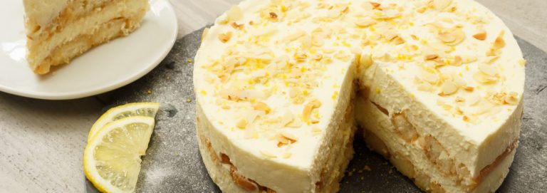

Ingredienten
- 1 pak lange vingers (28 stuks)
- 100 ml limoncello
- 2 citroenen
- 3 theelepels suiker
- 250 gram mascarpone
- 2 eetlepels lemon curd
- 200 gram (magere) kwark
- 300 ml slagroom
- 1 zakje klop-fix (optioneel)
- 6 eetlepels poedersuiker (of gewone suiker)
- Geschaafde amandelen, als garnering
- Springvorm (18 cm)
Limoncello Tiramisu taart.
Dit is een makkelijke taart om te maken als je geen oven hebt. Ik maak hem altijd als er een verjaardag is. Deze taart is altijd een groot succes, en ik krijg er altijd vragen over. Iedereen wil dit recept hebben. Hier onder vind je alle informatie die je nodig hebt om dit recept te maken.
Hoe maak je deze taart.
Verwarm 100 ml limoncello met het sap van 2 citroenen en 3 theelepels suiker en laat dit zachtjes 5 minuutjes koken. Schenk over in een platte schaal of diep bord.
Roer met een garde of spatel (of keukenmachine) 250 gram mascarpone los samen met 200 gram kwark en 2 à 3 eetlepels lemon curd. Klop 300 ml slagroom (hier is een mixer heel handig voor) lobbig en voeg hier 1 zakje klopfix aan toe en 6 eetlepels poedersuiker. Klopfix (van dr. Oetker) kan je gewoon in de supermarkt kopen. Dit zorgt voor stevigheid van je slagroom.
Meng de slagroom met een spatel voorzichtig door het mascarpone- en kwarkmengsel (niet te hard roeren anders verdwijnt de luchtigheid).
Dip nu de lange vingers, kort in het limoncello-mengsel en bedek hiermee de bodem van een ingevette springvorm (18 cm). Zorg dat de lange vingers vochtig zijn maar nog wel stevig. Bedek de lange vingers vervolgens met de helft van het mascarpone- kwarkmengsel. Herhaal deze stap nogmaals zodat je eindigt met een laag mascarpone-kwark.
Laat de taart nu minstens 1 uur opstijven in de koelkast. Voor het serveren maak je het af met wat citroenrasp, poedersuiker en wat geschaafde amandelen. Buon appetito!